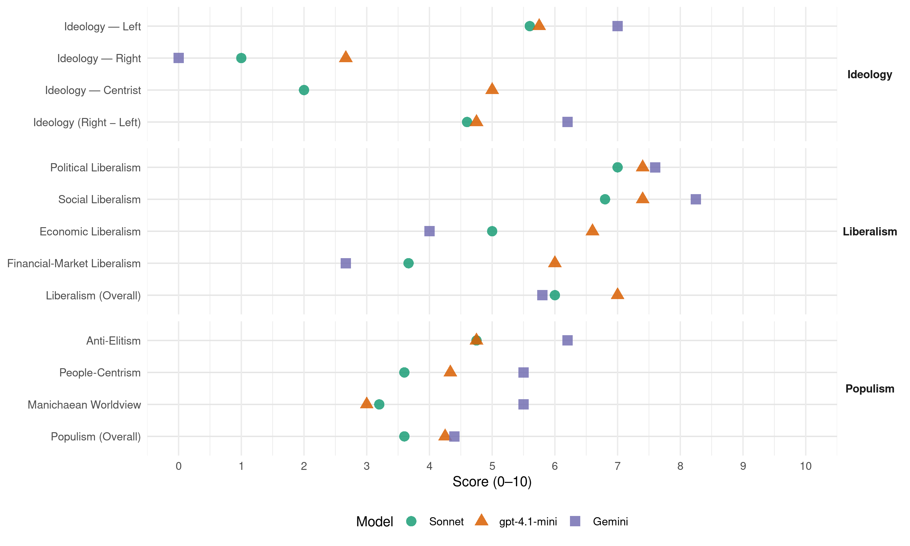

DIMAR (Greece, 2012)
manifesto_id 34213_201205
Get full text: This site shows derived annotations and short verbatim quotes only. The full manifesto text is © Manifesto Project / WZB — obtain it via manifesto-project.wzb.eu using the manifesto_id above.
Headline scores
| Dimension | Sonnet | gpt-4.1-mini | Gemini |
|---|---|---|---|
| Populism (Overall) | 3.6 | 4.2 | 4.4 |
| Anti-Elitism | 4.8 | 4.8 | 6.2 |
| People-Centrism | 3.6 | 4.3 | 5.5 |
| Manichaean Worldview | 3.2 | 3.0 | 5.5 |
| Ideology (Right − Left) | 4.6 | 4.8 | 6.2 |
| Liberalism (Overall) | 6.0 | 7.0 | 5.8 |
| Political Liberalism | 7.0 | 7.4 | 7.6 |
| Social Liberalism | 6.8 | 7.4 | 8.2 |
| Economic Liberalism | 5.0 | 6.6 | 4.0 |
| Financial-Market Liberalism | 3.7 | 6.0 | 2.7 |
Evidence per dimension
Economic Liberalism
Gemini · score 3.0 · verified · chunk 1
“έκτακτης ειδικής εισφοράς επί των κερδών επιχειρήσεων”
υπό ελληνική σημαία. Θέσπιση «έκτακτης ειδικής εισφοράς επί των κερδών επιχειρήσεων με ακαθάριστα έσοδα άνω των 2 εκατομμυρίων
Gemini · score 4.0 · mixed · chunk 2
“Αναθεώρηση του προγράμματος ιδιωτικοποιήσεων”
φυσικοί πόροι αποτελούν δημόσια περιουσία και οι κεντρικές υποδομές πρέπει να είναι υπό δημόσιο έλεγχο. Αναθεώρηση του προγράμματος ιδιωτικοποιήσεων, με στόχο την αξιοποίηση και όχι την εκποίηση του δημόσιου πλούτου
Gemini · score 4.0 · mixed · chunk 3
“παραχωρήσεων εμπορικών δραστηριοτήτων σε ιδιώτες”
ιδιωτικοποίηση της ιδιοκτησίας αλλά μέσω των παραχωρήσεων εμπορικών δραστηριοτήτων σε ιδιώτες. Η πρόταση μας, περιλαμβάνει
Gemini · score 4.0 · verified · chunk 4
“επιβολή ειδικού φόρου στον τραπεζικό κλάδο”
συμπληρωματικά και άλλες προτάσεις όπως η επιβολή ειδικού φόρου στον τραπεζικό κλάδο. Στόχος πρέπει να είναι
Gemini · score 5.0 · verified · chunk 5
“δυνάμεις της αγοράς, τις εθελοντικές”
ανάμεσα στην Τοπική Αυτοδιοίκηση στον ιδιωτικό τομέα, τις δυνάμεις της αγοράς, τις εθελοντικές οργανώσεις και την «κοινωνία
gpt-4.1-mini · score 6.0 · verified · chunk 1
“Ανάπτυξη νέου τύπου με κοινωνικές προτεραιότητες και περιβαλλοντική προστασία”
Το πρόγραμμα της Δημοκρατικής Αριστεράς υπερβαίνει το Μνημόνιο. Είναι ρεαλιστική δέσμη προτάσεων διεξόδου από την κρίση αλλά και δίκαιου επιμερισμού των βαρών της προσπάθειας αυτής. Είναι ένα αναλυτικό και εξειδικευμένο πρόγραμμα που αρθρώνεται σε οκτώ (8) βασικούς άξονες: Ανατροπή του πολιτικού συστήματος και των κατεστημένων Δημοσιονομική προσαρμογή με την οικονομία ζωντανή και την κοινωνία όρθια Ανάπτυξη νέου τύπου με κοινωνικές προτεραιότητες και περιβαλλοντική προστασία Άμεσα μέτρα ανακούφισης - Σύγχρονο και αποτελεσματικό κοινωνικό κράτος Δυναμική ένταξη στην κοινωνία της γνώσης Ποιότητα ζωής, καθημερινά, παντού Ανοιχτοί ορίζοντες για τη νεολαία Η Ελλάδα ευρωπαϊκή δύναμη στον κόσμο
gpt-4.1-mini · score 7.0 · verified · chunk 2
“ελεύθερη αγορά, ανταγωνισμός, φορολογικό πλαίσιο”
…Ρυθμίσεις που θα κάνουν πιο ευνοϊκό το περιβάλλον προς τις επιχειρήσεις με την έννοια ότι θα άρουν αδικαιολόγητα εμπόδια , θα αντιμετωπίσουν τη γραφειοκρατία, διαφθορά και θα δημιουργήσουν σταθερό φορολογικό πλαίσιο…
gpt-4.1-mini · score 7.0 · verified · chunk 3
“αναπτυξιακών πολιτικών που θα ανασυγκροτούν τον παραγωγικό ιστό”
…Νέες θέσεις εργασίας θα δημιουργηθούν στη χώρα μας με την εφαρμογή αναπτυξιακών πολιτικών που θα ανασυγκροτούν τον παραγωγικό ιστό και ταυτόχρονα θα αλλάζουν το παραγωγικό μοντέλο της χώρας σε τομείς όπως : Ανανεώσιμες πηγές ενέργειας…
gpt-4.1-mini · score 6.0 · verified · chunk 4
“μείωση των ασφαλιστικών εισφορών αλλά και των βελτιώσεων στα πεδία των επιβαρυντικών προς την ανταγωνιστικότητα παραγόντων”
Στόχος πρέπει να είναι στο τέλος του 2013, μέσω της καθιέρωσης της μείωσης των ασφαλιστικών εισφορών αλλά και των βελτιώσεων στα πεδία των επιβαρυντικών προς την ανταγωνιστικότητα παραγόντων , να επιτύχουμε την ανάκτηση της απώλειας κατά 22% του κατώτατου μισθού.
gpt-4.1-mini · score 7.0 · verified · chunk 5
“Η νέα γενιά πρέπει να βρει τον ρόλο της στον παγκόσμιο καταμερισμό εργασίας”
Το εκπαιδευτικό σύστημα οφείλει να δίνει διέξοδο στην επαγγελματική αναζήτηση των πολιτών και να υπηρετεί τις ανάγκες της παραγωγικής ανασυγκρότησης της χώρας.
Sonnet · score 4.0 · verified · chunk 1
“αλλαγή του αναπτυξιακού μοντέλου”
συνδυάζει την ηλεκτρονική διακυβέρνηση με την παραγωγική ανασυγκρότηση της χώρας, την αλλαγή του αναπτυξιακού μοντέλου, την ισότητα στη σχέση κέντρου περιφέρειας.
Sonnet · score 6.0 · mixed · chunk 2
“ενίσχυση του ανταγωνισμού προς όφελος”
Δέσπιση ρυθμίσεων για την ενίσχυση του ανταγωνισμού προς όφελος του καταναλωτή. Ενδυνάμωση του ελέγχου και της εποπτείας των τιμών
Sonnet · score 5.0 · mixed · chunk 3
“Διατήρηση του δημόσιου χαρακτήρα”
Αντίθετα εμείς πιστεύουμε ότι το λιμενικό σύστημα… Διατήρηση του δημόσιου χαρακτήρα με διασφάλιση του απολύτως πλειοψηφικού πακέτου του μετοχικού κεφαλαίου
Sonnet · score 5.0 · mixed · chunk 4
“επιβολή ειδικού φόρου στον τραπεζικό κλάδο”
θα μπορούσαν να εξετασθούν συμπληρωματικά και άλλες προτάσεις όπως η επιβολή ειδικού φόρου στον τραπεζικό κλάδο. Στόχος πρέπει να είναι στο τέλος του 2013
Sonnet · score 6.0 · verified · chunk 5
“Στροφή σε διεθνώς εμπορεύσιμους τομείς και προϊόντα”
Νεανική επιχειρηματικότητα, καινοτομία, παραγωγή. Στροφή σε διεθνώς εμπορεύσιμους τομείς και προϊόντα που θα έχουν προτιθέμενη αξία, θα δίνουν καλούς μισθούς και ικανοποιητικά κέρδη.
Financial-Market Liberalism
Gemini · score 2.0 · verified · chunk 1
“Έκτακτη φορολόγηση επί των παραγώγων προϊόντων”
για κάθε επισκέπτη των καζίνο. Έκτακτη φορολόγηση επί των παραγώγων προϊόντων του Χ.Α.Α με κλιμακούμενο συντελεστή 10-20%.
Gemini · score 3.0 · verified · chunk 2
“πυλώνα στο χρηματοπιστωτικό σύστημα υπό τον έλεγχο του δημοσίου”
Δημιουργία δημόσιου τραπεζικού πυλώνα / ανακεφαλαιοποίηση των Τραπεζών. Διαμόρφωση ενός ισχυρού πυλώνα στο χρηματοπιστωτικό σύστημα υπό τον έλεγχο του δημοσίου, με στόχο την εξασφάλιση της ομαλής ροής του χρήματος
Gemini · score 3.0 · verified · chunk 4
“επιβολή ειδικού φόρου στον τραπεζικό κλάδο”
συμπληρωματικά και άλλες προτάσεις όπως η επιβολή ειδικού φόρου στον τραπεζικό κλάδο. Στόχος πρέπει να είναι
gpt-4.1-mini · score 6.0 · verified · chunk 2
“ανακεφαλαιοποίηση των Τραπεζών… χρηματοδότηση της οικονομίας”
…Δημόσιος τραπεζικός πυλώνας / ανακεφαλαιοποίηση των Τραπεζών. Διαμόρφωση ενός ισχυρού πυλώνα στο χρηματοπιστωτικό σύστημα υπό τον έλεγχο του δημοσίου, με στόχο την εξασφάλιση της ομαλής ροής του χρήματος και της χρηματοδότησης της οικονομίας με μειωμένα επιτόκια…
Sonnet · score 3.0 · verified · chunk 1
“Έκτακτη φορολόγηση επί των παραγώγων”
Έκτακτη φορολόγηση επί των παραγώγων προϊόντων του Χ.Α.Α με κλιμακούμενο συντελεστή 10-20%.
Sonnet · score 4.0 · mixed · chunk 2
“δημόσιου τραπεζικού πυλώνα”
Διαμόρφωση ενός ισχυρού πυλώνα στο χρηματοπιστωτικό σύστημα υπό τον έλεγχο του δημοσίου… Δημιουργία δημόσιου τραπεζικού πυλώνα / ανακεφαλαιοποίηση των Τραπεζών
Sonnet · score 4.0 · verified · chunk 3
“επιβολή ειδικού φόρου στον τραπεζικό κλάδο”
θα μπορούσαν να εξετασθούν συμπληρωματικά και άλλες προτάσεις όπως η επιβολή ειδικού φόρου στον τραπεζικό κλάδο
Sonnet · score 4.0 · verified · chunk 4
“συμμετοχή όσων ευνοούνται από κρατικές ρυθμίσεις όπως οι τράπεζες από την ανακεφαλαιοποίηση”
αναδιοργάνωση στο εύρος και κυρίως στην ποιότητα των παρεχόμενων δημόσιων υποστηρικτικών λειτουργιών, κινητοποίηση της κοινωνίας των πολιτών, συμμετοχή όσων ευνοούνται από κρατικές ρυθμίσεις όπως οι τράπεζες από την ανακεφαλαιοποίηση.
Political Liberalism
Gemini · score 8.0 · verified · chunk 1
“Κράτος δικαίου που θα προασπίζει τα δικαιώματα”
ανάπτυξη. Κράτος δικαίου που θα προασπίζει τα δικαιώματα των πολιτών και θα διασφαλίζει τις ελευθερίες
Gemini · score 7.0 · verified · chunk 2
“διαφάνεια στις αποφάσεις και τη λειτουργία του”
δημόσιου και ευρύτερου δημόσιου τομέα, με αξιοποίηση πόρων και ανθρώπινου δυναμικού με αξιοκρατία, με διαφάνεια στις αποφάσεις και τη λειτουργία του, αποκτά τεράστια και επείγουσα αναγκαιότητα.
Gemini · score 7.0 · verified · chunk 3
“δημοκρατικών θεσμών περιφερειακής αυτοδιοίκησης”
Χάθηκε εν τέλει μια ευκαιρία καθιέρωσης δημοκρατικών θεσμών περιφερειακής αυτοδιοίκησης και παράλληλης ανάπτυξης μιας τεχνογνωσίας
Gemini · score 8.0 · verified · chunk 4
“δημοκρατική εκπαίδευση που θα διευκολύνει την ένταξη”
εθνικιστικών χαρακτηριστικών υπέρ μιας δημοκρατική εκπαίδευση που θα διευκολύνει την ένταξη και την κοινωνικοποίηση των παιδιών
Gemini · score 8.0 · verified · chunk 5
“δημοκρατικές διαδικασίες του Ενωσιακού και”
διασφαλίζει την ισότιμη σχέση των εταίρων, τη σύμφυση των δημοκρατικές διαδικασίες του Ενωσιακού και κρατικού επιπέδου, τον κοινοβουλευτικό
gpt-4.1-mini · score 8.0 · verified · chunk 1
“Κράτος δικαίου που θα προασπίζει τα δικαιώματα των πολιτών και θα διασφαλίζει τις ελευθερίες τους”
Κράτος που θα βασιστεί πάνω σε μία νέα σχέση δικαιωμάτων και υποχρεώσεων. Δημόσια διοίκηση που θα ανταπεξέλθει στις απαιτήσεις τόσο της προσπάθειας ανασυγκρότησης της χώρας και θα απαντάει στις προκλήσεις και θα ικανοποιεί τις ανάγκες των πολιτών. Η Δημοκρατική Αριστερά προτάσσει ως βασικό πυλώνα της προγραμματικής της πρότασης την αλλαγή του πολιτικού συστήματος και κατ’ επέκταση του κράτους και της δημόσιας διοίκησης.
gpt-4.1-mini · score 7.0 · verified · chunk 2
“Δημοκρατία υποστηρίζει την εφαρμογή μέτρων ριζικής αλλαγής”
…Η Δημοκρατική Αριστερά υποστηρίζει την εφαρμογή μέτρων ριζικής αλλαγής με: Προώθηση της ορθολογικής συνταγογράφησης…
gpt-4.1-mini · score 8.0 · verified · chunk 3
“Η καθιέρωση προληπτικού συνταγματικού ελέγχου μέσω του ΣτΕ”
…στη λήψη αποφάσεων και τον έλεγχο υλοποίησής τους. Η καθιέρωση προληπτικού συνταγματικού ελέγχου μέσω του ΣτΕ (Συμβουλίου Επικρατείας) στην έκδοση των κανονιστικών ή κατευθυντηρίων πράξεων υψηλού επιπέδου (με Προεδρικά Διατάγματα), θα επιτρέψει την απρόσκοπτη αποκέντρωση των αρμοδιοτήτων…
gpt-4.1-mini · score 7.0 · verified · chunk 4
“Η Δημοκρατική Αριστερά πιστεύει και προτείνει έναν ευρύ κοινωνικό διάλογο”
Η Δημοκρατική Αριστερά πιστεύει και προτείνει έναν ευρύ κοινωνικό διάλογο με στόχο την εκπόνηση στρατηγικού σχεδίου για την δίκαιη, ανοιχτή κοινωνία με ισότιμο πολίτη στην πράξη και την καθημερινότητα, τον πολίτη με αναπηρία.
gpt-4.1-mini · score 7.0 · verified · chunk 5
“Η Δημοκρατική Αριστερά υποστηρίζει την ανάγκη διαμόρφωσης ενός πλαισίου για τη δημιουργία νέων εταιρικών σχέσεων”
Η Δημοκρατική Αριστερά υποστηρίζει την ανάγκη διαμόρφωσης ενός πλαισίου για τη δημιουργία νέων εταιρικών σχέσεων ανάμεσα σε συμβαλλόμενους φορείς που θα οδηγήσουν στη χρήση και στην αξιοποίηση των πολιτισμικών αγαθών.
Sonnet · score 7.0 · verified · chunk 1
“Ενίσχυση της ανεξαρτησίας της δικαιοσύνης”
Ενίσχυση της ανεξαρτησίας της δικαιοσύνης ώστε να απεμπλακεί η εκτελεστική εξουσία από την επιλογή ηγεσίας της Δικαιοσύνης.
Sonnet · score 7.0 · verified · chunk 2
“διαφάνεια στην παροχή στοιχείων”
Ανασυγκρότηση και λειτουργία του γραφείου προϋπολογισμού της βουλής, με διαφάνεια στην παροχή στοιχείων και συνεργασία με τους κοινωνικούς φορείς
Sonnet · score 6.0 · verified · chunk 3
“καθιέρωση δημοκρατικών θεσμών περιφερειακής αυτοδιοίκησης”
Χάθηκε εν τέλει μια ευκαιρία καθιέρωσης δημοκρατικών θεσμών περιφερειακής αυτοδιοίκησης και παράλληλης ανάπτυξης μιας τεχνογνωσίας επιτελικού ρόλου
Sonnet · score 7.0 · verified · chunk 4
“Δημόσιο πανεπιστήμιο που αυτοδιοικείται, αξιολογείται και λογοδοτεί”
Η Δημοκρατική Αριστερά στηρίζει το δημόσιο πανεπιστήμιο που αυτοδιοικείται, αξιολογείται και λογοδοτεί, επειδή μόνο αυτό μπορεί να εξασφαλίσει το κοινωνικό αγαθό της παιδείας
Sonnet · score 8.0 · verified · chunk 5
“κοινοβουλευτικό έλεγχο στις αποφάσεις των ευρωπαϊκών οργάνων”
Η πολιτική ενοποίηση θα πρέπει να διασφαλίζει την ισότιμη σχέση των εταίρων, τη σύμφυση των δημοκρατικών διαδικασιών του Ενωσιακού και κρατικού επιπέδου, τον κοινοβουλευτικό έλεγχο στις αποφάσεις των ευρωπαϊκών οργάνων και τον αποφασιστικό ρόλο του Ευρωκοινοβουλίου.
Liberalism (Overall)
Gemini · score 5.0 · verified · chunk 1
“Κράτος δικαίου που θα προασπίζει τα δικαιώματα”
ανάπτυξη. Κράτος δικαίου που θα προασπίζει τα δικαιώματα των πολιτών και θα διασφαλίζει τις ελευθερίες
Gemini · score 5.0 · verified · chunk 2
“διαφάνεια στις αποφάσεις και τη λειτουργία του”
δημόσιου και ευρύτερου δημόσιου τομέα, με αξιοποίηση πόρων και ανθρώπινου δυναμικού με αξιοκρατία, με διαφάνεια στις αποφάσεις και τη λειτουργία του, αποκτά τεράστια και επείγουσα αναγκαιότητα.
Gemini · score 6.0 · verified · chunk 3
“δημοκρατικών θεσμών περιφερειακής αυτοδιοίκησης”
Χάθηκε εν τέλει μια ευκαιρία καθιέρωσης δημοκρατικών θεσμών περιφερειακής αυτοδιοίκησης και παράλληλης ανάπτυξης μιας τεχνογνωσίας
Gemini · score 6.0 · verified · chunk 4
“δημοκρατική εκπαίδευση που θα διευκολύνει την ένταξη”
εθνικιστικών χαρακτηριστικών υπέρ μιας δημοκρατική εκπαίδευση που θα διευκολύνει την ένταξη και την κοινωνικοποίηση των παιδιών
Gemini · score 7.0 · verified · chunk 5
“δημοκρατικές διαδικασίες του Ενωσιακού και”
διασφαλίζει την ισότιμη σχέση των εταίρων, τη σύμφυση των δημοκρατικές διαδικασίες του Ενωσιακού και κρατικού επιπέδου, τον κοινοβουλευτικό
gpt-4.1-mini · score 7.0 · verified · chunk 1
“Κράτος δικαίου που θα προασπίζει τα δικαιώματα των πολιτών και θα διασφαλίζει τις ελευθερίες τους”
Κράτος που θα βασιστεί πάνω σε μία νέα σχέση δικαιωμάτων και υποχρεώσεων. Δημόσια διοίκηση που θα ανταπεξέλθει στις απαιτήσεις τόσο της προσπάθειας ανασυγκρότησης της χώρας και θα απαντάει στις προκλήσεις και θα ικανοποιεί τις ανάγκες των πολιτών. Η Δημοκρατική Αριστερά προτάσσει ως βασικό πυλώνα της προγραμματικής της πρότασης την αλλαγή του πολιτικού συστήματος και κατ’ επέκταση του κράτους και της δημόσιας διοίκησης.
gpt-4.1-mini · score 7.0 · verified · chunk 2
“Δημοκρατία υποστηρίζει την εφαρμογή μέτρων ριζικής αλλαγής”
…Η Δημοκρατική Αριστερά υποστηρίζει την εφαρμογή μέτρων ριζικής αλλαγής με: Προώθηση της ορθολογικής συνταγογράφησης…
gpt-4.1-mini · score 7.0 · verified · chunk 3
“Η καθιέρωση προληπτικού συνταγματικού ελέγχου μέσω του ΣτΕ”
…στη λήψη αποφάσεων και τον έλεγχο υλοποίησής τους. Η καθιέρωση προληπτικού συνταγματικού ελέγχου μέσω του ΣτΕ (Συμβουλίου Επικρατείας) στην έκδοση των κανονιστικών ή κατευθυντηρίων πράξεων υψηλού επιπέδου (με Προεδρικά Διατάγματα), θα επιτρέψει την απρόσκοπτη αποκέντρωση των αρμοδιοτήτων…
gpt-4.1-mini · score 7.0 · verified · chunk 4
“ισότητα είναι αξία που κρίνεται στην πράξη, στην καθημερινότητα”
Η ισότητα είναι αξία που κρίνεται στην πράξη, στην καθημερινότητα. Η ισοτιμία, οι ίσες ευκαιρίες προς όλους τους πολίτες, η συμμετοχή όλων στην κοινωνική και οικονομική ζωή δεν είναι πολυτέλεια.
gpt-4.1-mini · score 7.0 · verified · chunk 5
“Η Δημοκρατική Αριστερά υποστηρίζει την ανάγκη διαμόρφωσης ενός πλαισίου για τη δημιουργία νέων εταιρικών σχέσεων”
Η Δημοκρατική Αριστερά υποστηρίζει την ανάγκη διαμόρφωσης ενός πλαισίου για τη δημιουργία νέων εταιρικών σχέσεων ανάμεσα σε συμβαλλόμενους φορείς που θα οδηγήσουν στη χρήση και στην αξιοποίηση των πολιτισμικών αγαθών.
Sonnet · score 5.0 · verified · chunk 1
“Κράτος δικαίου που θα προασπίζει τα δικαιώματα”
Κράτος δικαίου που θα προασπίζει τα δικαιώματα των πολιτών και θα διασφαλίζει τις ελευθερίες τους.
Sonnet · score 6.0 · mixed · chunk 2
“ενίσχυση του ανταγωνισμού προς όφελος”
Δέσπιση ρυθμίσεων για την ενίσχυση του ανταγωνισμού προς όφελος του καταναλωτή. Ενδυνάμωση του ελέγχου και της εποπτείας των τιμών
Sonnet · score 5.0 · mixed · chunk 3
“ισότητα είναι αξία που κρίνεται στην πράξη”
Η ισότητα είναι αξία που κρίνεται στην πράξη, στην καθημερινότητα. Η ισοτιμία, οι ίσες ευκαιρίες προς όλους τους πολίτες
Sonnet · score 6.0 · verified · chunk 4
“ίσες ευκαιρίες προς όλους τους πολίτες”
Η ισοτιμία, οι ίσες ευκαιρίες προς όλους τους πολίτες, η συμμετοχή όλων στην κοινωνική και οικονομική ζωή δεν είναι πολυτέλεια.
Sonnet · score 7.0 · verified · chunk 5
“Δημοκρατία και Κράτος Δικαίου, Ελεύθερη Αγορά, Ανθρώπινα Δικαιώματα”
Απαραίτητες προϋποθέσεις όμως είναι ο σεβασμός του ευρωπαϊκού κεκτημένου και η πλήρωση των κριτηρίων της Κοπεγχάγης που είναι, Δημοκρατία και Κράτος Δικαίου, Ελεύθερη Αγορά, Ανθρώπινα Δικαιώματα και Προστασία των μειονοτήτων.
Anti-Elitism
Gemini · score 8.0 · verified · chunk 1
“οδήγησε τη χώρα στο τέλμα της διαφθοράς”
κύρια ευθύνη του ΠΑΣΟΚ και της ΝΔ, δημιούργησε το πελατειακό κράτος, οικειοποιήθηκε τη δημόσια διοίκηση και οδήγησε τη χώρα στο τέλμα της διαφθοράς. Σήμερα οι δεσμεύσεις
Gemini · score 6.0 · verified · chunk 2
“πολιτικές επιρροές των ομάδων της οικονομικής ελίτ”
έργων θα πρέπει γίνεται με κριτήριο την αναπτυξιακή τους στόχευση, τις εξωτερικές οικονομίες και τη μόχλευση και όχι τα πολιτικοοικονομικά λόμπυ και τις πολιτικές επιρροές των ομάδων της οικονομικής ελίτ που έμαθαν να παράγουν πολλά ίδια κέρδη
Gemini · score 4.0 · verified · chunk 3
“προσωπικές ή κομματικές δημόσιες σχέσεις”
τουριστικής προβολής της χώρας έξω από τη λογική εσωτερικής προβολής για προσωπικές ή κομματικές δημόσιες σχέσεις, παρακολούθηση των αγορών
Gemini · score 6.0 · verified · chunk 4
“Το κομματικό κράτος και η συντεχνιακή διαπλοκή”
ορθόδοξη κατήχηση. Το κομματικό κράτος και η συντεχνιακή διαπλοκή συνεχίζουν να υπονομεύουν την αξιοκρατία
Gemini · score 7.0 · verified · chunk 5
“Το κομματικό κράτος ουσιαστικά ανέχεται”
παράνομο πλουτισμό, κομματισμό, νεποτισμό, κ.λ.π.). Το κομματικό κράτος ουσιαστικά ανέχεται και τις περισσότερες φορές στηρίζει όλο
gpt-4.1-mini · score 8.0 · verified · chunk 1
“το πολιτικό σύστημα. Αυτό, με κύρια ευθύνη του ΠΑΣΟΚ και της ΝΔ, δημιούργησε το πελατειακό κράτος”
Η πολυεπίπεδη ελληνική κρίση οφείλεται στο πολιτικό σύστημα. Αυτό, με κύρια ευθύνη του ΠΑΣΟΚ και της ΝΔ, δημιούργησε το πελατειακό κράτος, οικειοποιήθηκε τη δημόσια διοίκηση και οδήγησε τη χώρα στο τέλμα της διαφθοράς. Σήμερα οι δεσμεύσεις που έχει αναλάβει η χώρα μας μέσω των δανειακών συμβάσεων οδηγούν σε αδιέξοδο.
gpt-4.1-mini · score 4.0 · verified · chunk 2
“πολιτικοοικονομικά λόμπυ και τις πολιτικές επιρροές των ομάδων της οικονομικής ελίτ”
…αναπτυξιακής διαδικασίας. Η επιλογή δημόσιων έργων θα πρέπει γίνεται με κριτήριο την αναπτυξιακή τους στόχευση, τις εξωτερικές οικονομίες και τη μόχλευση και όχι τα πολιτικοοικονομικά λόμπυ και τις πολιτικές επιρροές των ομάδων της οικονομικής ελίτ που έμαθαν να παράγουν πολλά ίδια κέρδη και λίγα αποτελέσματα προς όφελος της κοινωνίας…
gpt-4.1-mini · score 4.0 · verified · chunk 4
“ευνοούσε τους πλούσιους σε βάρος των φτωχών”
Το προηγούμενο σύστημα συντάξεων αναδιένεμε πόρους και δικαιώματα αλλά στην αντίθετη κατεύθυνση: ευνοούσε τους πλούσιους σε βάρος των φτωχών, τους ελεύθερους επαγγελματίες σε βάρος των μισθωτών, τους εργαζόμενους του Δημοσίου σε βάρος των εργαζομένων του ιδιωτικού τομέα, όσους ήταν κοντά στην ηλικία συνταξιοδότησης σε βάρος των νέων ασφαλισμένων – και κυρίως ευνοούσε τη σημερινή γενεά φορτώνοντας δυσβάστακτα βάρη στις επόμενες.
gpt-4.1-mini · score 3.0 · verified · chunk 5
“Το κομματικό κράτος ουσιαστικά ανέχεται και τις περισσότερες φορές στηρίζει όλο αυτό το οικοδόμημα”
Το κομματικό κράτος ουσιαστικά ανέχεται και τις περισσότερες φορές στηρίζει όλο αυτό το οικοδόμημα, το χρηματοδοτεί, το χρησιμοποιεί και επεκτείνει την διαπλοκή στα κύτταρα και τη λειτουργία του.
Sonnet · score 7.0 · verified · chunk 1
“κύρια ευθύνη του ΠΑΣΟΚ και της ΝΔ”
Αυτό, με κύρια ευθύνη του ΠΑΣΟΚ και της ΝΔ, δημιούργησε το πελατειακό κράτος, οικειοποιήθηκε τη δημόσια διοίκηση και οδήγησε τη χώρα στο τέλμα της διαφθοράς.
Sonnet · score 4.0 · mixed · chunk 2
“πολιτικοοικονομικά λόμπυ και τις πολιτικές επιρροές”
η επιλογή δημόσιων έργων θα πρέπει γίνεται με κριτήριο την αναπτυξιακή τους στόχευση… και όχι τα πολιτικοοικονομικά λόμπυ και τις πολιτικές επιρροές των ομάδων της οικονομικής ελίτ που έμαθαν να παράγουν πολλά ίδια κέρδη
Sonnet · score 3.0 · verified · chunk 3
“ανεπάρκεια του πολιτικού προσωπικού όλων των βαθμίδων”
Στην Ελλάδα, όπου η ανεπάρκεια του πολιτικού προσωπικού όλων των βαθμίδων οδηγεί στη βεβιασμένη πρόκριση «λύσεων» μηδενικής προσπάθειας
Sonnet · score 4.0 · verified · chunk 4
“Ισχυρά συντεχνιακά συμφέροντα εξουδετέρωσαν όλες τις μεταρρυθμιστικές προσπάθειες”
τον τομέα της υγείας λυμαίνονται λογής συμφέροντα σε πολλά και διαφορετικά επίπεδα. Ισχυρά συντεχνιακά συμφέροντα εξουδετέρωσαν όλες τις μεταρρυθμιστικές προσπάθειες και οδήγησαν σε τέλμα το ΕΣΥ.
Sonnet · score 5.0 · verified · chunk 5
“το κομματικό κράτος ουσιαστικά ανέχεται και τις περισσότερες φορές στηρίζει”
παρασιτικά φαινόμενα (ανεξέλεγκτη ή και κατευθυνόμενη βία, χρηματισμό, διακίνηση μαύρου χρήματος, παράνομο πλουτισμό, κομματισμό, νεποτισμό, κ.λ.π.). Το κομματικό κράτος ουσιαστικά ανέχεται και τις περισσότερες φορές στηρίζει όλο αυτό το οικοδόμημα, το χρηματοδοτεί, το χρησιμοποιεί
Ideology — Centrist
gpt-4.1-mini · score 6.0 · verified · chunk 1
“Η συμμετοχή του λαού σε όλες τις διαδικασίες είναι απαραίτητη”
Η συμμετοχή του λαού σε όλες τις διαδικασίες είναι απαραίτητη. Δημοψήφισμα Στα πλαίσια του Συντάγματος που προβλέπει διεξαγωγή δημοψηφισμάτων, οι πολίτες πρέπει να ερωτούνται για σημαντικά ζητήματα. Η άποψή τους είναι αποφασιστικής σημασίας.
gpt-4.1-mini · score 4.0 · verified · chunk 2
“διαφάνεια και δημοκρατία στο σχεδιασμό”
…Διαχείριση των πόρων με διαφάνεια και δημοκρατία στο σχεδιασμό, βέλτιστη σχέση κόστους οφέλους, διαρκή διαδικασία αξιολόγησης και επανασχεδιασμού παρεμβάσεων ώστε να βελτιώνονται τα αποτελέσματα τους και οι ωφέλειες για την κοινωνία…
gpt-4.1-mini · score 5.0 · verified · chunk 5
“Η ανάγκη διαμόρφωσης ενός πλαισίου για τη δημιουργία νέων εταιρικών σχέσεων ανάμεσα σε συμβαλλόμενους φορείς”
Η Δημοκρατική Αριστερά υποστηρίζει την ανάγκη διαμόρφωσης ενός πλαισίου για τη δημιουργία νέων εταιρικών σχέσεων ανάμεσα σε συμβαλλόμενους φορείς που θα οδηγήσουν στη χρήση και στην αξιοποίηση των πολιτισμικών αγαθών.
Sonnet · score 2.0 · verified · chunk 1
“Η συμμετοχή του λαού σε όλες τις διαδικασίες”
Η συμμετοχή του λαού σε όλες τις διαδικασίες είναι απαραίτητη. Δημοψήφισμα
Sonnet · score 2.0 · verified · chunk 2
“διαφάνεια και δημοκρατία στο σχεδιασμό”
Διαχείριση των πόρων με διαφάνεια και δημοκρατία στο σχεδιασμό, βέλτιστη σχέση κόστους οφέλους
Sonnet · score 2.0 · verified · chunk 3
“διάλογο των κοινωνικών εταίρων”
Έμφαση στον διάλογο των κοινωνικών εταίρων και ενίσχυση των συλλογικών διαπραγματεύσεων
Sonnet · score 2.0 · verified · chunk 4
“κινητοποίηση της κοινωνίας των πολιτών”
αναδιοργάνωση στο εύρος και κυρίως στην ποιότητα των παρεχόμενων δημόσιων υποστηρικτικών λειτουργιών, κινητοποίηση της κοινωνίας των πολιτών, συμμετοχή όσων ευνοούνται από κρατικές ρυθμίσεις
Sonnet · score 2.0 · verified · chunk 5
“Προτάσεις στοχευμένες, μακριά από την απόλυτη αλήθεια”
Έχουμε σχέδιο, έχουμε προτάσεις. Προτάσεις στοχευμένες, μακριά από την απόλυτη αλήθεια και ακόμη πιο μακριά από το να χαρακτηριστούν το αρτιότερο σχέδιο εξυπηρέτησης των αναγκών των νέων ανθρώπων.
Ideology — Left
Gemini · score 8.0 · verified · chunk 1
“ουσιαστική φορολόγηση του μεγάλου κεφαλαίου και του πλούτου”
με τη διεύρυνση της φορολογικής βάσης, την ουσιαστική φορολόγηση του μεγάλου κεφαλαίου και του πλούτου, την εντατικοποίηση των φορολογικών ελέγχων
Gemini · score 7.0 · verified · chunk 2
“ομάδων της οικονομικής ελίτ που έμαθαν να παράγουν πολλά ίδια κέρδη”
και όχι τα πολιτικοοικονομικά λόμπυ και τις πολιτικές επιρροές των ομάδων της οικονομικής ελίτ που έμαθαν να παράγουν πολλά ίδια κέρδη και λίγα αποτελέσματα προς όφελος της κοινωνίας.
Gemini · score 6.0 · verified · chunk 3
“αποδυνάμωση της μισθωτής εργασίας”
εργασιακών σχέσεων, σε όλα τα επίπεδα, που δεν θα υπακούουν στην περαιτέρω αποδυνάμωση της μισθωτής εργασίας. iii) Ναυτιλία
Gemini · score 7.0 · verified · chunk 4
“ευνοούσε τους πλούσιους σε βάρος των φτωχών”
συντάξεων αναδιένεμε πόρους και δικαιώματα αλλά στην αντίθετη κατεύθυνση: ευνοούσε τους πλούσιους σε βάρος των φτωχών, τους ελεύθερους επαγγελματίες
Gemini · score 7.0 · verified · chunk 5
“ανακατανομή των εισοδημάτων και η λήψη”
κόσμους στην ίδια πόλη). Η ανακατανομή των εισοδημάτων και η λήψη πρόσφορων μέτρων υπέρ των φτωχότερων
gpt-4.1-mini · score 7.0 · verified · chunk 1
“να προασπίσει την κοινωνική συνοχή και την κοινωνική αλληλεγγύη”
Μια στρατηγική εξόδου που πρέπει να επιμερίσει δίκαια τα βάρη, να προασπίσει την κοινωνική συνοχή και την κοινωνική αλληλεγγύη, να μην αφήσει βαρύ οικολογικό αποτύπωμα χάριν της όποιας αναπτυξιακής προσπάθειας και τέλος να ανανεώσει και να ανασυγκροτήσει τη χώρα θεσμικά δημοκρατικά.
gpt-4.1-mini · score 6.0 · verified · chunk 2
“δίκαιη κατανομή του πλούτου που θα παράγεται από την ανάπτυξη”
…Η επιλογή δημόσιων έργων θα πρέπει γίνεται με κριτήριο την αναπτυξιακή τους στόχευση… Δίκαιη κατανομή του πλούτου που θα παράγεται από την ανάπτυξη. Προσανατολισμός στη διατηρήσιμη ανάπτυξη με αύξηση της απασχόλησης…
gpt-4.1-mini · score 5.0 · verified · chunk 4
“ευνοούσε τους πλούσιους σε βάρος των φτωχών”
Το προηγούμενο σύστημα συντάξεων αναδιένεμε πόρους και δικαιώματα αλλά στην αντίθετη κατεύθυνση: ευνοούσε τους πλούσιους σε βάρος των φτωχών, τους ελεύθερους επαγγελματίες σε βάρος των μισθωτών, τους εργαζόμενους του Δημοσίου σε βάρος των εργαζομένων του ιδιωτικού τομέα, όσους ήταν κοντά στην ηλικία συνταξιοδότησης σε βάρος των νέων ασφαλισμένων – και κυρίως ευνοούσε τη σημερινή γενεά φορτώνοντας δυσβάστακτα βάρη στις επόμενες.
gpt-4.1-mini · score 5.0 · verified · chunk 5
“Η ανακατανομή των εισοδημάτων και η λήψη πρόσφορων μέτρων υπέρ των φτωχότερων στρωμάτων”
Η ανακατανομή των εισοδημάτων και η λήψη πρόσφορων μέτρων υπέρ των φτωχότερων στρωμάτων συνδέεται άρρηκτα με την ουσιαστική κοινωνική δικαιοσύνη και τη δικαιωματοκρατία.
Sonnet · score 7.0 · verified · chunk 1
“ουσιαστική φορολόγηση του μεγάλου κεφαλαίου”
την αύξηση των δημοσίων εσόδων, με τη διεύρυνση της φορολογικής βάσης, την ουσιαστική φορολόγηση του μεγάλου κεφαλαίου και του πλούτου
Sonnet · score 5.0 · verified · chunk 2
“Δίκαιη κατανομή του πλούτου”
Δίκαιη κατανομή του πλούτου που θα παράγεται από την ανάπτυξη. Προσανατολισμός στη διατηρήσιμη ανάπτυξη με αύξηση της απασχόλησης.
Sonnet · score 5.0 · verified · chunk 3
“διασφάλιση συλλογικών συμβάσεων”
η διασφάλιση συλλογικών συμβάσεων και γενικότερα, εργασιακών σχέσεων, σε όλα τα επίπεδα, που δεν θα υπακούουν στην περαιτέρω αποδυνάμωση της μισθωτής εργασίας
Sonnet · score 5.0 · verified · chunk 4
“ευνοούσε τους πλούσιους σε βάρος των φτωχών”
Το προηγούμενο σύστημα συντάξεων αναδιένεμε πόρους και δικαιώματα αλλά στην αντίθετη κατεύθυνση: ευνοούσε τους πλούσιους σε βάρος των φτωχών, τους ελεύθερους επαγγελματίες σε βάρος των μισθωτών
Sonnet · score 6.0 · verified · chunk 5
“ανακατανομή των εισοδημάτων και η λήψη πρόσφορων μέτρων υπέρ των φτωχότερων στρωμάτων”
Η ανακατανομή των εισοδημάτων και η λήψη πρόσφορων μέτρων υπέρ των φτωχότερων στρωμάτων συνδέεται άρρηκτα με την ουσιαστική κοινωνική δικαιοσύνη και τη δικαιωματοκρατία.
Ideology (Right − Left)
Gemini · score 8.0 · verified · chunk 1
“ουσιαστική φορολόγηση του μεγάλου κεφαλαίου και του πλούτου”
με τη διεύρυνση της φορολογικής βάσης, την ουσιαστική φορολόγηση του μεγάλου κεφαλαίου και του πλούτου, την εντατικοποίηση των φορολογικών ελέγχων
Gemini · score 6.0 · verified · chunk 2
“ομάδων της οικονομικής ελίτ που έμαθαν να παράγουν πολλά ίδια κέρδη”
και όχι τα πολιτικοοικονομικά λόμπυ και τις πολιτικές επιρροές των ομάδων της οικονομικής ελίτ που έμαθαν να παράγουν πολλά ίδια κέρδη και λίγα αποτελέσματα προς όφελος της κοινωνίας.
Gemini · score 4.0 · verified · chunk 3
“αποδυνάμωση της μισθωτής εργασίας”
εργασιακών σχέσεων, σε όλα τα επίπεδα, που δεν θα υπακούουν στην περαιτέρω αποδυνάμωση της μισθωτής εργασίας. iii) Ναυτιλία
Gemini · score 6.0 · verified · chunk 4
“ευνοούσε τους πλούσιους σε βάρος των φτωχών”
συντάξεων αναδιένεμε πόρους και δικαιώματα αλλά στην αντίθετη κατεύθυνση: ευνοούσε τους πλούσιους σε βάρος των φτωχών, τους ελεύθερους επαγγελματίες
Gemini · score 7.0 · verified · chunk 5
“ανακατανομή των εισοδημάτων και η λήψη”
κόσμους στην ίδια πόλη). Η ανακατανομή των εισοδημάτων και η λήψη πρόσφορων μέτρων υπέρ των φτωχότερων
gpt-4.1-mini · score 6.0 · verified · chunk 1
“το πολιτικό σύστημα. Αυτό, με κύρια ευθύνη του ΠΑΣΟΚ και της ΝΔ, δημιούργησε το πελατειακό κράτος”
Η πολυεπίπεδη ελληνική κρίση οφείλεται στο πολιτικό σύστημα. Αυτό, με κύρια ευθύνη του ΠΑΣΟΚ και της ΝΔ, δημιούργησε το πελατειακό κράτος, οικειοποιήθηκε τη δημόσια διοίκηση και οδήγησε τη χώρα στο τέλμα της διαφθοράς. Σήμερα οι δεσμεύσεις που έχει αναλάβει η χώρα μας μέσω των δανειακών συμβάσεων οδηγούν σε αδιέξοδο.
gpt-4.1-mini · score 4.0 · verified · chunk 2
“δίκαιη κατανομή του πλούτου που θα παράγεται από την ανάπτυξη”
…Η επιλογή δημόσιων έργων θα πρέπει γίνεται με κριτήριο την αναπτυξιακή τους στόχευση… Δίκαιη κατανομή του πλούτου που θα παράγεται από την ανάπτυξη. Προσανατολισμός στη διατηρήσιμη ανάπτυξη με αύξηση της απασχόλησης…
gpt-4.1-mini · score 5.0 · verified · chunk 4
“ευνοούσε τους πλούσιους σε βάρος των φτωχών”
Το προηγούμενο σύστημα συντάξεων αναδιένεμε πόρους και δικαιώματα αλλά στην αντίθετη κατεύθυνση: ευνοούσε τους πλούσιους σε βάρος των φτωχών, τους ελεύθερους επαγγελματίες σε βάρος των μισθωτών, τους εργαζόμενους του Δημοσίου σε βάρος των εργαζομένων του ιδιωτικού τομέα, όσους ήταν κοντά στην ηλικία συνταξιοδότησης σε βάρος των νέων ασφαλισμένων – και κυρίως ευνοούσε τη σημερινή γενεά φορτώνοντας δυσβάστακτα βάρη στις επόμενες.
gpt-4.1-mini · score 4.0 · verified · chunk 5
“Το κομματικό κράτος ουσιαστικά ανέχεται και τις περισσότερες φορές στηρίζει όλο αυτό το οικοδόμημα”
Το κομματικό κράτος ουσιαστικά ανέχεται και τις περισσότερες φορές στηρίζει όλο αυτό το οικοδόμημα, το χρηματοδοτεί, το χρησιμοποιεί και επεκτείνει την διαπλοκή στα κύτταρα και τη λειτουργία του.
Sonnet · score 6.0 · verified · chunk 1
“προστασία του λαϊκού εισοδήματος”
Προτείνουμε ένα διαφορετικό σχέδιο δημοσιονομικής προσαρμογής με προστασία του λαϊκού εισοδήματος και απόδοση βαρύτητας στην καταπολέμηση της σπατάλης
Sonnet · score 4.0 · verified · chunk 2
“Δίκαιη κατανομή του πλούτου”
Δίκαιη κατανομή του πλούτου που θα παράγεται από την ανάπτυξη. Προσανατολισμός στη διατηρήσιμη ανάπτυξη με αύξηση της απασχόλησης.
Sonnet · score 4.0 · verified · chunk 3
“διασφάλιση συλλογικών συμβάσεων”
η διασφάλιση συλλογικών συμβάσεων και γενικότερα, εργασιακών σχέσεων, σε όλα τα επίπεδα, που δεν θα υπακούουν στην περαιτέρω αποδυνάμωση της μισθωτής εργασίας
Sonnet · score 4.0 · verified · chunk 4
“ευνοούσε τους πλούσιους σε βάρος των φτωχών”
Το προηγούμενο σύστημα συντάξεων αναδιένεμε πόρους και δικαιώματα αλλά στην αντίθετη κατεύθυνση: ευνοούσε τους πλούσιους σε βάρος των φτωχών
Sonnet · score 5.0 · verified · chunk 5
“κοινωνικής και αλληλέγγυας «οικονομίας του πολιτισμού»”
Στην κατεύθυνση μιας κοινωνικής και αλληλέγγυας «οικονομίας του πολιτισμού» χρειάζονται μια σειρά από παρεμβάσεις στον πολιτιστικό τομέα σε τοπικό και περιφερειακό επίπεδο.
Ideology — Right
Gemini · score 0.0 · verified · chunk 5
“μέτωπο απέναντι στον εθνικισμό και”
καθημερινότητας και της αλληλεγγύης¬, με σταθερό μέτωπο απέναντι στον εθνικισμό και το νέο-ρατσισμό.
gpt-4.1-mini · score 3.0 · verified · chunk 1
“Αλλαγή του εκλογικού νόμου υπέρ της απλής αναλογικής”
Αλλαγή του εκλογικού νόμου υπέρ της απλής αναλογικής ώστε να αποτυπώνεται πιστά η βούληση του εκλογικού σώματος στο κοινοβούλιο. Διαίρεση των μεγάλων εκλογικών περιφερειών ώστε να περιοριστεί η διακίνηση άδηλου πολιτικού χρήματος, να περιοριστούν οι εκλογικές δαπάνες, να περιοριστεί η αθέμιτη επιρροή εξωθεσμικών παραγόντων,
gpt-4.1-mini · score 2.0 · verified · chunk 2
“ανάγκη μείωσης των στρατιωτικών δαπανών”
…Η μείωση των στρατιωτικών δαπανών είναι πρέπει να προκύψει μέσα από: -Αναστολή κάθε τρέχουσας παραγγελίας νέων οπλικών συστημάτων…
gpt-4.1-mini · score 3.0 · verified · chunk 5
“Η ανάδυση της καχυποψίας και του μίσους ενάντια στον «άλλον», τον ξένο”
Ταυτόχρονα, καθώς η ελληνική κοινωνία αλλάζει λόγω του έντονου μεταναστευτικού ρεύματος, παρατηρούμε την ανάδυση της καχυποψίας και του μίσους ενάντια στον «άλλον», τον ξένο, τον πολιτισμικά διαφορετικό.
Sonnet · score 1.0 · verified · chunk 1
“εισαγόμενης εγκληματικότητας και των εγκληματικών δικτύων”
Πάταξη του οργανωμένου εγκλήματος, της εισαγόμενης εγκληματικότητας και των εγκληματικών δικτύων.
Sonnet · score 1.0 · verified · chunk 3
“στροφή σε ελληνικά πληρώματα”
Ανάπτυξη συντονισμένης προσπάθειας, μέσα και από σειρά κινήτρων, για την ενίσχυση της ναυτιλίας και την στροφή σε ελληνικά πληρώματα
Sonnet · score 1.0 · verified · chunk 4
“σταθερό μέτωπο απέναντι στον εθνικισμό”
προτείνεται η ενίσχυση των δράσεων για τον «πολιτισμό της καθημερινότητας και της αλληλεγγύης», με σταθερό μέτωπο απέναντι στον εθνικισμό και το νέο-ρατσισμό.
Sonnet · score 1.0 · verified · chunk 5
“σταθερό μέτωπο απέναντι στον εθνικισμό και το νέο-ρατσισμό”
Για τον λόγο αυτό, προτείνεται η ενίσχυση των δράσεων για τον «πολιτισμό της καθημερινότητας και της αλληλεγγύης», με σταθερό μέτωπο απέναντι στον εθνικισμό και το νέο-ρατσισμό.
Manichaean Worldview
Gemini · score 5.0 · verified · chunk 1
“Ανατροπή του πολιτικού συστήματος και των κατεστημένων”
οκτώ (8) βασικούς άξονες: Ανατροπή του πολιτικού συστήματος και των κατεστημένων Δημοσιονομική προσαρμογή με την οικονομία ζωντανή
Gemini · score 6.0 · verified · chunk 5
“διαπλοκή στα κύτταρα και τη λειτουργία”
χρηματοδοτεί, το χρησιμοποιεί και επεκτείνει την διαπλοκή στα κύτταρα και τη λειτουργία του. Ο αθλητισμός, με το
gpt-4.1-mini · score 5.0 · mixed · chunk 1
“μια πολιτικά συντηρητική και οικονομικά αναποτελεσματική συνταγή”
Πέραν αυτών όροι που περιέχονται στο Μνημόνιο και έχουν να κάνουν με την αξιοποίηση της δημόσιας περιουσίας και με την ανορθολογική ιεράρχηση αναγκών και προτεραιοτήτων, τοποθετώντας την ανάγκη αποπληρωμής του χρέους πάνω από τις κοινωνικές ανάγκες, συνθέτουν ένα εκρηκτικό μίγμα, μια πολιτικά συντηρητική και οικονομικά αναποτελεσματική συνταγή. Στα πλαίσια αυτά της συγκυρίας βασικός στόχος της Δημοκρατικής Αριστεράς είναι η παραμονή της χώρας εντός ευρωπαϊκού πλαισίου,
gpt-4.1-mini · score 2.0 · verified · chunk 2
“αντιστάθμισμα της δανειοδότησης που παρέχεται στη χώρα μας”
…αντιμετώπιση των πιέσεων για την αγορά στρατιωτικού εξοπλισμού από τις ευρωπαϊκές χώρες ως «αντιστάθμισμα» της δανειοδότησης που παρέχεται στη χώρα μας. -Αναμόρφωση όλου του συστήματος προμηθειών στις ένοπλες δυνάμεις…
gpt-4.1-mini · score 4.0 · verified · chunk 5
“Η ανάδυση της καχυποψίας και του μίσους ενάντια στον «άλλον»”
Ταυτόχρονα, καθώς η ελληνική κοινωνία αλλάζει λόγω του έντονου μεταναστευτικού ρεύματος, παρατηρούμε την ανάδυση της καχυποψίας και του μίσους ενάντια στον «άλλον», τον ξένο, τον πολιτισμικά διαφορετικό.
Sonnet · score 5.0 · verified · chunk 1
“κυβέρνηση φιλολαϊκή και προοδευτική”
μπορεί να κινηθεί μόνο μια κυβέρνηση φιλολαϊκή και προοδευτική, που θα αμφισβητήσει μονόδρομους και παραδοχές του εγχώριου κατεστημένου.
Sonnet · score 3.0 · verified · chunk 2
“κυριαρχία του πελατειακού κράτους”
Απαιτείται ρήξη με την κυριαρχία του πελατειακού κράτους, με πρακτικές διαπλοκής και κύκλους συμφερόντων
Sonnet · score 2.0 · verified · chunk 3
“ευνοούσε τους πλούσιους σε βάρος των φτωχών”
Το προηγούμενο σύστημα συντάξεων αναδιένεμε πόρους και δικαιώματα αλλά στην αντίθετη κατεύθυνση: ευνοούσε τους πλούσιους σε βάρος των φτωχών
Sonnet · score 3.0 · verified · chunk 4
“τιμωρητικό χαρακτήρα του προγράμματος”
Η ρύθμιση αυτή πρέπει να αρθεί, καθώς αναδεικνύει έναν τιμωρητικό χαρακτήρα του προγράμματος. Αυτά που πρέπει να διεκδικηθούν είναι:
Sonnet · score 3.0 · verified · chunk 5
“Οι ευθύνες των κυβερνήσεων της ΝΔ και του ΠΑΣΟΚ”
Η κατάσταση αυτή πρέπει να αλλάξει. Οι ευθύνες των κυβερνήσεων της ΝΔ και του ΠΑΣΟΚ, που τόσα χρόνια άφησαν το πρόβλημα να πάρει ανεξέλεγκτες διαστάσεις, είναι τεράστιες.
People-Centrism
Gemini · score 6.0 · verified · chunk 1
“πιστή εκπροσώπηση και αντιπροσώπευση της κοινωνίας”
από εξωθεσμικά κέντρα επιρροής, η ποιοτική διακυβέρνηση, η πιστή εκπροσώπηση και αντιπροσώπευση της κοινωνίας και των πολιτών αλλά και ο αυστηρός έλεγχος
Gemini · score 5.0 · verified · chunk 5
“οφέλη της στο κοινωνικό σύνολο”
αθλητικής δραστηριότητας, άρα και τα όποια οφέλη της στο κοινωνικό σύνολο, παρουσιάζει έντονα στοιχεία εκφυλισμού
gpt-4.1-mini · score 6.0 · verified · chunk 1
“Η συμμετοχή του λαού σε όλες τις διαδικασίες είναι απαραίτητη”
Η συμμετοχή του λαού σε όλες τις διαδικασίες είναι απαραίτητη. Δημοψήφισμα Στα πλαίσια του Συντάγματος που προβλέπει διεξαγωγή δημοψηφισμάτων, οι πολίτες πρέπει να ερωτούνται για σημαντικά ζητήματα. Η άποψή τους είναι αποφασιστικής σημασίας.
gpt-4.1-mini · score 3.0 · verified · chunk 2
“να διαδραματίσει το ρόλο που της ανήκει στις σημερινές συνθήκες”
…είναι η διαδικασία που επιτρέπει στην τοπική κοινωνία να αναλάβει τις ευθύνες της και να διαδραματίσει το ρόλο που της ανήκει στις σημερινές συνθήκες. Σ΄ αυτό το πλαίσιο οι αυτοδιοικητικοί θεσμοί αποκτούν ιδιαίτερο ρόλο…
gpt-4.1-mini · score 4.0 · verified · chunk 5
“Η ελληνική νεολαία είναι οικονομικά, θεσμικά, πολιτικά και κοινωνικά αδικημένη”
Η ελληνική νεολαία είναι οικονομικά, θεσμικά, πολιτικά και κοινωνικά αδικημένη από την πορεία των εξελίξεων στη χώρα και το περιβάλλον που διαμορφώνεται.
Sonnet · score 5.0 · verified · chunk 1
“προτείνουμε την υπέρβαση”
με οδηγό τις αρχές μας και χάρτη τις προγραμματικές μας δεσμεύσεις σε κάθε Έλληνα και Ελληνίδα προτείνουμε την υπέρβαση. Υπέρβαση της κρίσης
Sonnet · score 3.0 · verified · chunk 2
“προς όφελος της κοινωνίας”
των ομάδων της οικονομικής ελίτ που έμαθαν να παράγουν πολλά ίδια κέρδη και λίγα αποτελέσματα προς όφελος της κοινωνίας
Sonnet · score 3.0 · verified · chunk 3
“κοστίζουν, βέβαια, στον ελληνικό λαό”
εμφανίζει και εδώ τεράστιες καθυστερήσεις και στρεβλώσεις, που κοστίζουν, βέβαια, στον ελληνικό λαό, οικονομικά και περιβαλλοντικά
Sonnet · score 3.0 · verified · chunk 4
“μείωσης του λαϊκού εισοδήματος”
σε περίπτωση υποαπόδοσης των μέτρων προβλέπει ότι θα επιβάλλονται νέα μέτρα μείωσης του λαϊκού εισοδήματος. Η ρύθμιση αυτή είναι κοινωνικά απαράδεκτη
Sonnet · score 4.0 · verified · chunk 5
“η ελληνική νεολαία είναι οικονομικά, θεσμικά, πολιτικά και κοινωνικά αδικημένη”
Σε αυτές τις κατακλυσμιαίες αλλαγές δεν μπορεί και δεν πρέπει να μετέχει αναπαράγοντας κλισέ και βεβαιότητες του παρελθόντος. Η ελληνική νεολαία είναι οικονομικά, θεσμικά, πολιτικά και κοινωνικά αδικημένη από την πορεία των εξελίξεων στη χώρα
Populism (Overall)
Gemini · score 6.0 · verified · chunk 1
“Ανατροπή του πολιτικού συστήματος και των κατεστημένων”
οκτώ (8) βασικούς άξονες: Ανατροπή του πολιτικού συστήματος και των κατεστημένων Δημοσιονομική προσαρμογή με την οικονομία ζωντανή
Gemini · score 5.0 · verified · chunk 2
“πολιτικές επιρροές των ομάδων της οικονομικής ελίτ”
έργων θα πρέπει γίνεται με κριτήριο την αναπτυξιακή τους στόχευση, τις εξωτερικές οικονομίες και τη μόχλευση και όχι τα πολιτικοοικονομικά λόμπυ και τις πολιτικές επιρροές των ομάδων της οικονομικής ελίτ που έμαθαν να παράγουν πολλά ίδια κέρδη
Gemini · score 2.0 · verified · chunk 3
“προσωπικές ή κομματικές δημόσιες σχέσεις”
τουριστικής προβολής της χώρας έξω από τη λογική εσωτερικής προβολής για προσωπικές ή κομματικές δημόσιες σχέσεις, παρακολούθηση των αγορών
Gemini · score 3.0 · verified · chunk 4
“Το κομματικό κράτος και η συντεχνιακή διαπλοκή”
ορθόδοξη κατήχηση. Το κομματικό κράτος και η συντεχνιακή διαπλοκή συνεχίζουν να υπονομεύουν την αξιοκρατία
Gemini · score 6.0 · verified · chunk 5
“Το κομματικό κράτος ουσιαστικά ανέχεται”
παράνομο πλουτισμό, κομματισμό, νεποτισμό, κ.λ.π.). Το κομματικό κράτος ουσιαστικά ανέχεται και τις περισσότερες φορές στηρίζει όλο
gpt-4.1-mini · score 6.0 · verified · chunk 1
“το πολιτικό σύστημα. Αυτό, με κύρια ευθύνη του ΠΑΣΟΚ και της ΝΔ, δημιούργησε το πελατειακό κράτος”
Η πολυεπίπεδη ελληνική κρίση οφείλεται στο πολιτικό σύστημα. Αυτό, με κύρια ευθύνη του ΠΑΣΟΚ και της ΝΔ, δημιούργησε το πελατειακό κράτος, οικειοποιήθηκε τη δημόσια διοίκηση και οδήγησε τη χώρα στο τέλμα της διαφθοράς. Σήμερα οι δεσμεύσεις που έχει αναλάβει η χώρα μας μέσω των δανειακών συμβάσεων οδηγούν σε αδιέξοδο.
gpt-4.1-mini · score 3.0 · verified · chunk 2
“πολιτικοοικονομικά λόμπυ και τις πολιτικές επιρροές των ομάδων της οικονομικής ελίτ”
…αναπτυξιακής διαδικασίας. Η επιλογή δημόσιων έργων θα πρέπει γίνεται με κριτήριο την αναπτυξιακή τους στόχευση, τις εξωτερικές οικονομίες και τη μόχλευση και όχι τα πολιτικοοικονομικά λόμπυ και τις πολιτικές επιρροές των ομάδων της οικονομικής ελίτ που έμαθαν να παράγουν πολλά ίδια κέρδη και λίγα αποτελέσματα προς όφελος της κοινωνίας…
gpt-4.1-mini · score 4.0 · verified · chunk 4
“ευνοούσε τους πλούσιους σε βάρος των φτωχών”
Το προηγούμενο σύστημα συντάξεων αναδιένεμε πόρους και δικαιώματα αλλά στην αντίθετη κατεύθυνση: ευνοούσε τους πλούσιους σε βάρος των φτωχών, τους ελεύθερους επαγγελματίες σε βάρος των μισθωτών, τους εργαζόμενους του Δημοσίου σε βάρος των εργαζομένων του ιδιωτικού τομέα, όσους ήταν κοντά στην ηλικία συνταξιοδότησης σε βάρος των νέων ασφαλισμένων – και κυρίως ευνοούσε τη σημερινή γενεά φορτώνοντας δυσβάστακτα βάρη στις επόμενες.
gpt-4.1-mini · score 4.0 · verified · chunk 5
“Το κομματικό κράτος ουσιαστικά ανέχεται και τις περισσότερες φορές στηρίζει όλο αυτό το οικοδόμημα”
Το κομματικό κράτος ουσιαστικά ανέχεται και τις περισσότερες φορές στηρίζει όλο αυτό το οικοδόμημα, το χρηματοδοτεί, το χρησιμοποιεί και επεκτείνει την διαπλοκή στα κύτταρα και τη λειτουργία του.
Sonnet · score 5.0 · verified · chunk 1
“αμφισβητήσει μονόδρομους και παραδοχές του εγχώριου κατεστημένου”
μπορεί να κινηθεί μόνο μια κυβέρνηση φιλολαϊκή και προοδευτική, που θα αμφισβητήσει μονόδρομους και παραδοχές του εγχώριου κατεστημένου.
Sonnet · score 3.0 · verified · chunk 2
“πρακτικές διαπλοκής και κύκλους συμφερόντων”
Απαιτείται ρήξη με την κυριαρχία του πελατειακού κράτους, με πρακτικές διαπλοκής και κύκλους συμφερόντων, με οργανωτικούς ανορθολογισμούς
Sonnet · score 3.0 · verified · chunk 3
“ανεπάρκεια του πολιτικού προσωπικού όλων των βαθμίδων”
Στην Ελλάδα, όπου η ανεπάρκεια του πολιτικού προσωπικού όλων των βαθμίδων οδηγεί στη βεβιασμένη πρόκριση «λύσεων» μηδενικής προσπάθειας
Sonnet · score 3.0 · verified · chunk 4
“Ισχυρά συντεχνιακά συμφέροντα εξουδετέρωσαν”
Ισχυρά συντεχνιακά συμφέροντα εξουδετέρωσαν όλες τις μεταρρυθμιστικές προσπάθειες και οδήγησαν σε τέλμα το ΕΣΥ.
Sonnet · score 4.0 · verified · chunk 5
“το μεταπολιτευτικό δικομματικό κατεστημένο”
Δυστυχώς το μεταπολιτευτικό δικομματικό κατεστημένο, δεν άφησε αλώβητες ούτε την εθνική άμυνα και φυσικά τις ένοπλες δυνάμεις.
Social Liberalism